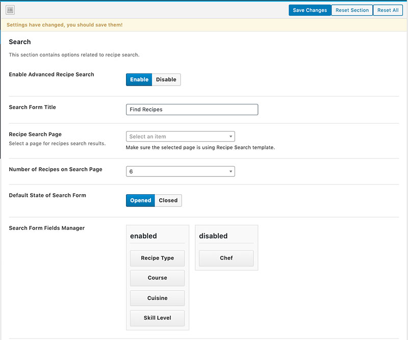
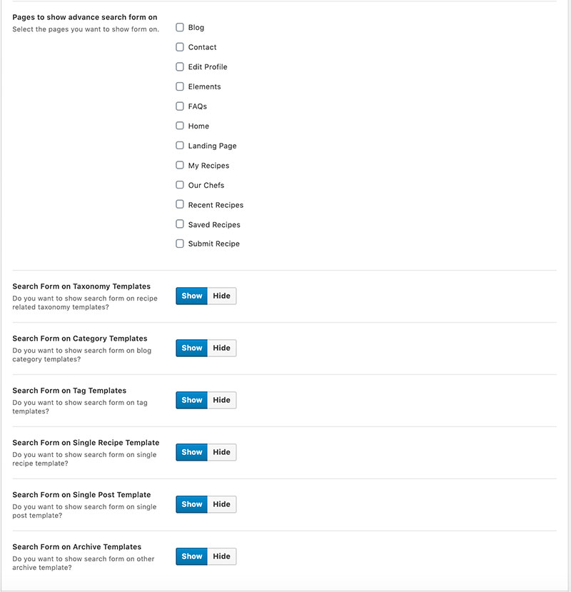

Advanced Search Options
This section has multiple self explaining settings as listed below.
1 - You can enable or disable the advance search for the whole website.
2 - You can add/change search form show/hide button text which is also the title of the search form.
3 - It is necessary that you select the search page from pages drop-down for the related option. The search for will not work without it.
4 - You can select number of recipes per page for the search template.
5 - You can select if you want the search form open or closed by default.
6 - You can enable/disable/rearrange the search form fields form this settings page as well.

7 - You can choose what pages should have the search form visible in header.
8 - You can also choose the visibility of the search form on archive and taxonomy pages.
